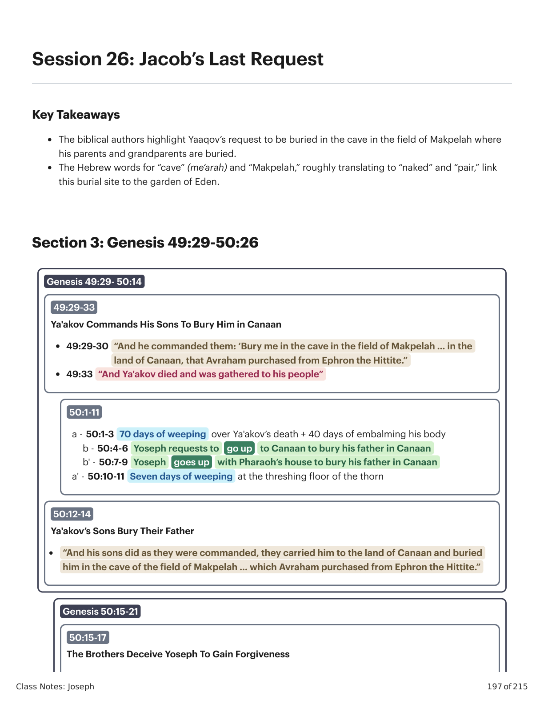
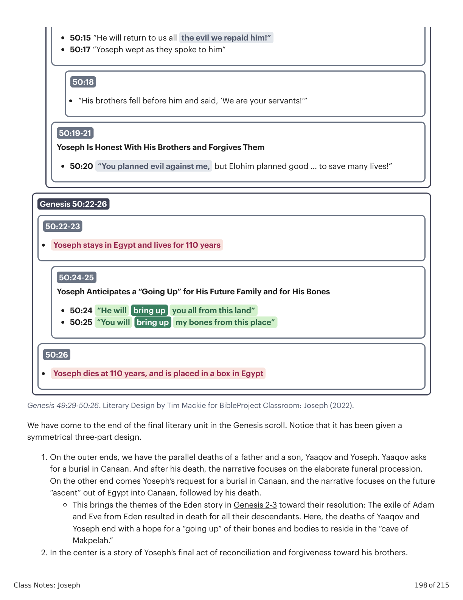
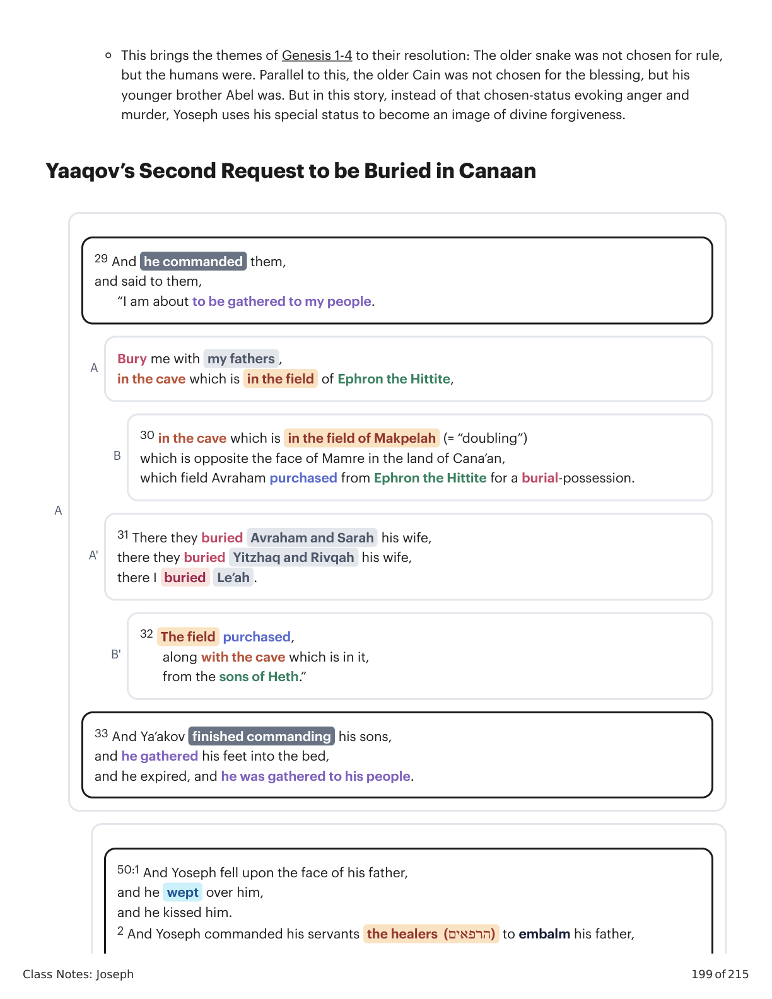
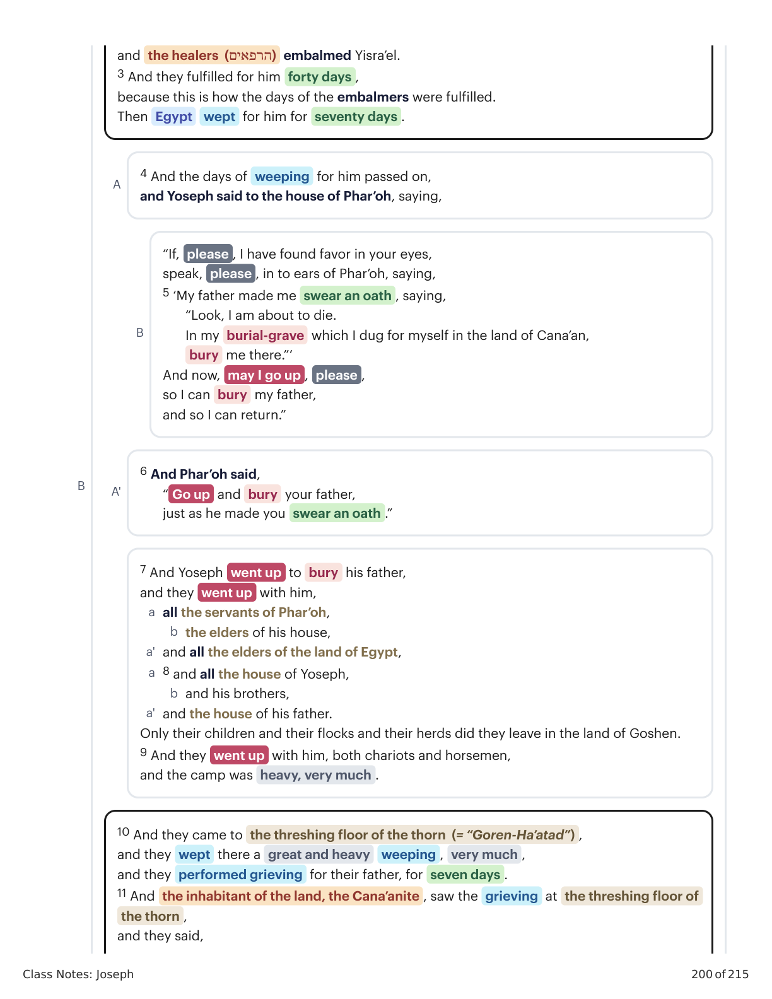
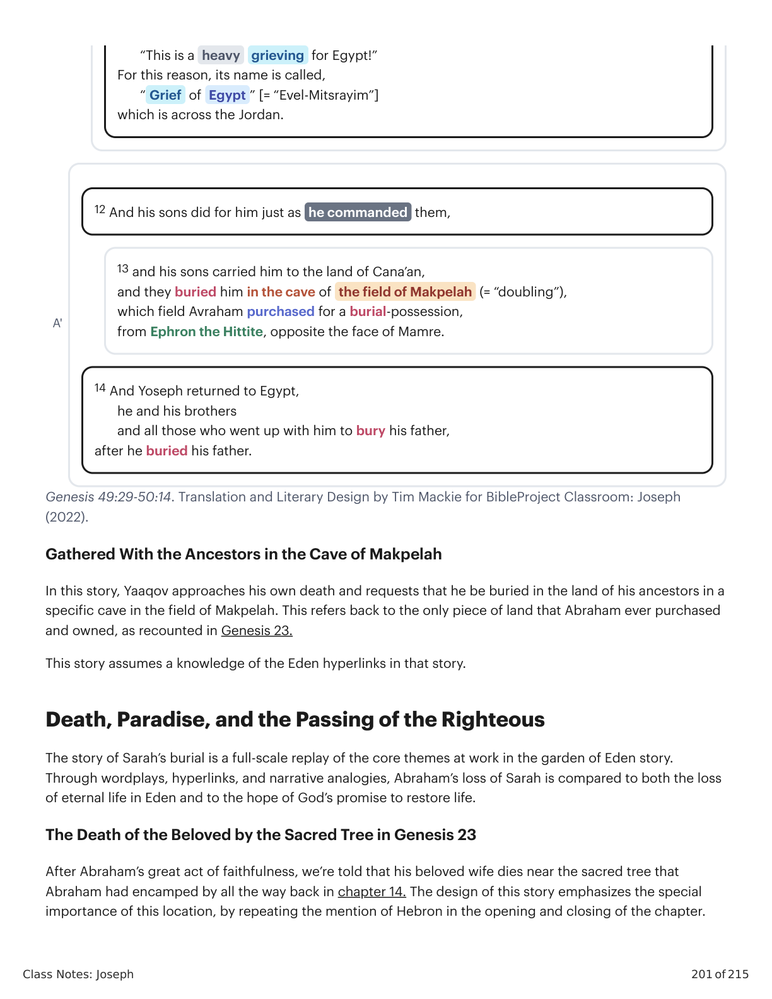
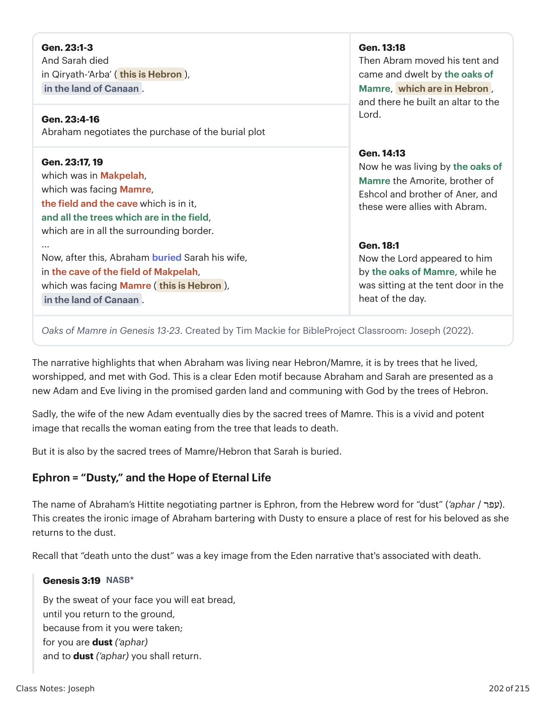
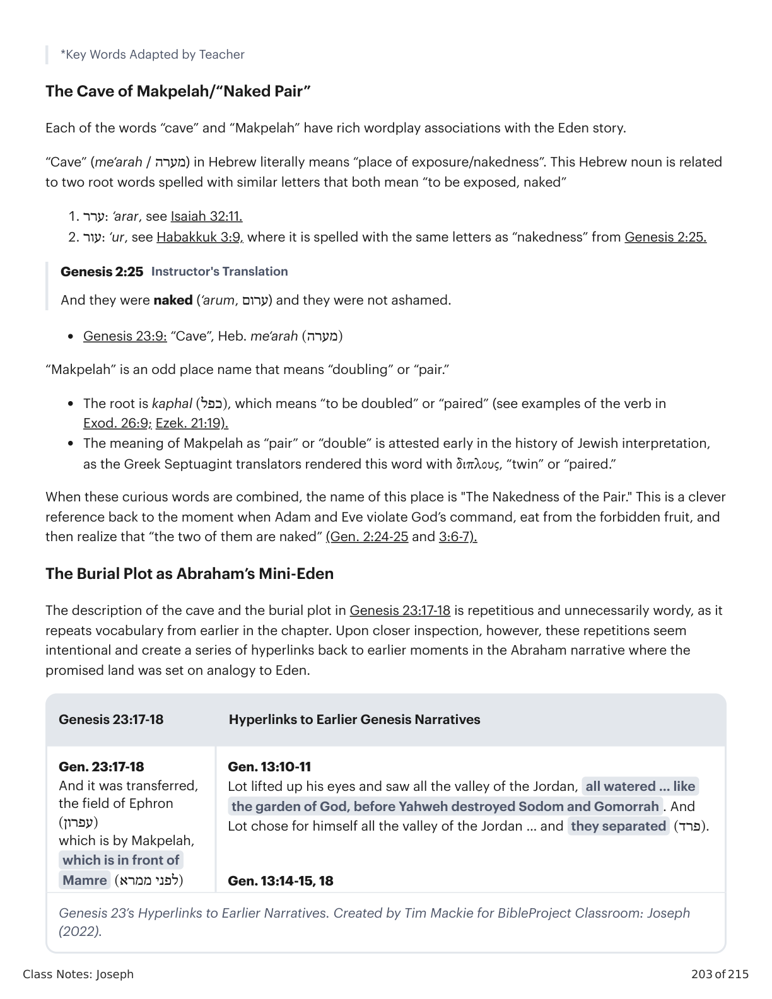

Sessão 26: O Último Pedido de JacóSession 26: Jacob’s Last Request
Class Notes: Joseph
197 of 215
Session 26: Jacob’s Last Request
Key Takeaways
The biblical authors highlight Yaaqov’s request to be buried in the cave in the field of Makpelah where
his parents and grandparents are buried.
The Hebrew words for “cave” (me‘arah) and “Makpelah,” roughly translating to “naked” and “pair,” link
this burial site to the garden of Eden.
Section 3: Genesis 49:29-50:26
Genesis 49:29- 50:14
49:29-33
Ya'akov Commands His Sons To Bury Him in Canaan
• 49:29-30 “And he commanded them: ‘Bury me in the cave in the field of Makpelah … in the
land of Canaan, that Avraham purchased from Ephron the Hittite.”
• 49:33 “And Ya'akov died and was gathered to his people”
50:1-11
a - 50:1-3 70 days of weeping over Ya'akov’s death + 40 days of embalming his body
b - 50:4-6 Yoseph requests to
go up
to Canaan to bury his father in Canaan
b' - 50:7-9 Yoseph
goes up
with Pharaoh’s house to bury his father in Canaan
a' - 50:10-11 Seven days of weeping at the threshing floor of the thorn
50:12-14
Ya'akov’s Sons Bury Their Father
“And his sons did as they were commanded, they carried him to the land of Canaan and buried
him in the cave of the field of Makpelah … which Avraham purchased from Ephron the Hittite.”
Genesis 50:15-21
50:15-17
The Brothers Deceive Yoseph To Gain Forgiveness

Gênesis X:Y. Tradução e Design Literário por Tim Mackie para BibleProject Classroom: José (2021).Genesis X:Y. Translation and Literary Design by Tim Mackie for BibleProject Classroom: Joseph (2021).
Class Notes: Joseph
198 of 215
Genesis 49:29-50:26. Literary Design by Tim Mackie for BibleProject Classroom: Joseph (2022).
We have come to the end of the final literary unit in the Genesis scroll. Notice that it has been given a
symmetrical three-part design.
1. On the outer ends, we have the parallel deaths of a father and a son, Yaaqov and Yoseph. Yaaqov asks
for a burial in Canaan. And after his death, the narrative focuses on the elaborate funeral procession.
On the other end comes Yoseph’s request for a burial in Canaan, and the narrative focuses on the future
“ascent” out of Egypt into Canaan, followed by his death.
This brings the themes of the Eden story in Genesis 2-3 toward their resolution: The exile of Adam
and Eve from Eden resulted in death for all their descendants. Here, the deaths of Yaaqov and
Yoseph end with a hope for a “going up” of their bones and bodies to reside in the “cave of
Makpelah.”
2. In the center is a story of Yoseph’s final act of reconciliation and forgiveness toward his brothers.
• 50:15 “He will return to us all the evil we repaid him!”
• 50:17 “Yoseph wept as they spoke to him”
50:18
“His brothers fell before him and said, ‘We are your servants!’”
50:19-21
Yoseph Is Honest With His Brothers and Forgives Them
• 50:20 “You planned evil against me, but Elohim planned good … to save many lives!”
Genesis 50:22-26
50:22-23
Yoseph stays in Egypt and lives for 110 years
50:24-25
Yoseph Anticipates a “Going Up” for His Future Family and for His Bones
• 50:24 “He will
bring up
you all from this land”
• 50:25 “You will
bring up
my bones from this place”
50:26
Yoseph dies at 110 years, and is placed in a box in Egypt

Gênesis X:Y. Tradução e Design Literário por Tim Mackie para BibleProject Classroom: José (2021).Genesis X:Y. Translation and Literary Design by Tim Mackie for BibleProject Classroom: Joseph (2021).
Class Notes: Joseph
199 of 215
This brings the themes of Genesis 1-4 to their resolution: The older snake was not chosen for rule,
but the humans were. Parallel to this, the older Cain was not chosen for the blessing, but his
younger brother Abel was. But in this story, instead of that chosen-status evoking anger and
murder, Yoseph uses his special status to become an image of divine forgiveness.
Yaaqov’s Second Request to be Buried in Canaan
A
29 And he commanded them,
and said to them,
“I am about to be gathered to my people.
A
Bury me with my fathers ,
in the cave which is in the field of Ephron the Hittite,
B
30 in the cave which is in the field of Makpelah (= “doubling”)
which is opposite the face of Mamre in the land of Cana’an,
which field Avraham purchased from Ephron the Hittite for a burial-possession.
A'
31 There they buried Avraham and Sarah his wife,
there they buried Yitzhaq and Rivqah his wife,
there I buried
Le’ah .
B'
32 The field purchased,
along with the cave which is in it,
from the sons of Heth.”
33 And Ya’akov finished commanding his sons,
and he gathered his feet into the bed,
and he expired, and he was gathered to his people.
50:1 And Yoseph fell upon the face of his father,
and he wept over him,
and he kissed him.
2 And Yoseph commanded his servants the healers (הרפאים) to embalm his father,

Gênesis X:Y. Tradução e Design Literário por Tim Mackie para BibleProject Classroom: José (2021).Genesis X:Y. Translation and Literary Design by Tim Mackie for BibleProject Classroom: Joseph (2021).
Class Notes: Joseph
200 of 215
B
and the healers (הרפאים) embalmed Yisra’el.
3 And they fulfilled for him forty days ,
because this is how the days of the embalmers were fulfilled.
Then Egypt
wept for him for seventy days .
A
4 And the days of weeping for him passed on,
and Yoseph said to the house of Phar’oh, saying,
B
“If, please , I have found favor in your eyes,
speak, please , in to ears of Phar’oh, saying,
5 ‘My father made me swear an oath , saying,
“Look, I am about to die.
In my burial-grave which I dug for myself in the land of Cana’an,
bury me there.”‘
And now, may I go up , please ,
so I can bury my father,
and so I can return.”
A'
6 And Phar’oh said,
“ Go up and bury your father,
just as he made you swear an oath .”
7 And Yoseph went up to bury his father,
and they went up with him,
all the servants of Phar’oh,
a
the elders of his house,
b
and all the elders of the land of Egypt,
a'
8 and all the house of Yoseph,
a
and his brothers,
b
and the house of his father.
a'
Only their children and their flocks and their herds did they leave in the land of Goshen.
9 And they went up with him, both chariots and horsemen,
and the camp was heavy, very much .
10 And they came to the threshing floor of the thorn (= “Goren-Ha’atad”) ,
and they wept there a great and heavy
weeping , very much ,
and they performed grieving for their father, for seven days .
11 And the inhabitant of the land, the Cana’anite , saw the grieving at the threshing floor of
the thorn ,
and they said,

Gênesis X:Y. Tradução e Design Literário por Tim Mackie para BibleProject Classroom: José (2021).Genesis X:Y. Translation and Literary Design by Tim Mackie for BibleProject Classroom: Joseph (2021).
Class Notes: Joseph
201 of 215
Genesis 49:29-50:14. Translation and Literary Design by Tim Mackie for BibleProject Classroom: Joseph
(2022).
Gathered With the Ancestors in the Cave of Makpelah
In this story, Yaaqov approaches his own death and requests that he be buried in the land of his ancestors in a
specific cave in the field of Makpelah. This refers back to the only piece of land that Abraham ever purchased
and owned, as recounted in Genesis 23.
This story assumes a knowledge of the Eden hyperlinks in that story.
Death, Paradise, and the Passing of the Righteous
The story of Sarah’s burial is a full-scale replay of the core themes at work in the garden of Eden story.
Through wordplays, hyperlinks, and narrative analogies, Abraham’s loss of Sarah is compared to both the loss
of eternal life in Eden and to the hope of God’s promise to restore life.
The Death of the Beloved by the Sacred Tree in Genesis 23
After Abraham’s great act of faithfulness, we’re told that his beloved wife dies near the sacred tree that
Abraham had encamped by all the way back in chapter 14. The design of this story emphasizes the special
importance of this location, by repeating the mention of Hebron in the opening and closing of the chapter.
“This is a heavy
grieving for Egypt!”
For this reason, its name is called,
“ Grief of Egypt ” [= “Evel-Mitsrayim”]
which is across the Jordan.
A'
12 And his sons did for him just as he commanded them,
13 and his sons carried him to the land of Cana’an,
and they buried him in the cave of the field of Makpelah (= “doubling”),
which field Avraham purchased for a burial-possession,
from Ephron the Hittite, opposite the face of Mamre.
14 And Yoseph returned to Egypt,
he and his brothers
and all those who went up with him to bury his father,
after he buried his father.

Gênesis X:Y. Tradução e Design Literário por Tim Mackie para BibleProject Classroom: José (2021).Genesis X:Y. Translation and Literary Design by Tim Mackie for BibleProject Classroom: Joseph (2021).
Class Notes: Joseph
202 of 215
Gen. 23:1-3
And Sarah died
in Qiryath-‘Arba’ ( this is Hebron ),
in the land of Canaan .
Gen. 13:18
Then Abram moved his tent and
came and dwelt by the oaks of
Mamre, which are in Hebron ,
and there he built an altar to the
Lord.
Gen. 14:13
Now he was living by the oaks of
Mamre the Amorite, brother of
Eshcol and brother of Aner, and
these were allies with Abram.
Gen. 18:1
Now the Lord appeared to him
by the oaks of Mamre, while he
was sitting at the tent door in the
heat of the day.
Gen. 23:4-16
Abraham negotiates the purchase of the burial plot
Gen. 23:17, 19
which was in Makpelah,
which was facing Mamre,
the field and the cave which is in it,
and all the trees which are in the field,
which are in all the surrounding border.
...
Now, after this, Abraham buried Sarah his wife,
in the cave of the field of Makpelah,
which was facing Mamre ( this is Hebron ),
in the land of Canaan .
Oaks of Mamre in Genesis 13-23. Created by Tim Mackie for BibleProject Classroom: Joseph (2022).
The narrative highlights that when Abraham was living near Hebron/Mamre, it is by trees that he lived,
worshipped, and met with God. This is a clear Eden motif because Abraham and Sarah are presented as a
new Adam and Eve living in the promised garden land and communing with God by the trees of Hebron.
Sadly, the wife of the new Adam eventually dies by the sacred trees of Mamre. This is a vivid and potent
image that recalls the woman eating from the tree that leads to death.
But it is also by the sacred trees of Mamre/Hebron that Sarah is buried.
Ephron = “Dusty,” and the Hope of Eternal Life
The name of Abraham’s Hittite negotiating partner is Ephron, from the Hebrew word for “dust” (‘aphar / עפר).
This creates the ironic image of Abraham bartering with Dusty to ensure a place of rest for his beloved as she
returns to the dust.
Recall that “death unto the dust” was a key image from the Eden narrative that's associated with death.
Genesis 3:19 NASB*
By the sweat of your face you will eat bread,
until you return to the ground,
because from it you were taken;
for you are dust (‘aphar)
and to dust (‘aphar) you shall return.

Gênesis X:Y. Tradução e Design Literário por Tim Mackie para BibleProject Classroom: José (2021).Genesis X:Y. Translation and Literary Design by Tim Mackie for BibleProject Classroom: Joseph (2021).
Class Notes: Joseph
203 of 215
*Key Words Adapted by Teacher
The Cave of Makpelah/“Naked Pair”
Each of the words “cave” and “Makpelah” have rich wordplay associations with the Eden story.
“Cave” (me‘arah / מערה) in Hebrew literally means “place of exposure/nakedness”. This Hebrew noun is related
to two root words spelled with similar letters that both mean “to be exposed, naked”
1. ערר: ‘arar, see Isaiah 32:11.
2. עור: ‘ur, see Habakkuk 3:9, where it is spelled with the same letters as “nakedness” from Genesis 2:25.
Genesis 2:25 Instructor's Translation
And they were naked (‘arum, ערום) and they were not ashamed.
Genesis 23:9: “Cave”, Heb. me‘arah )(מערה
“Makpelah” is an odd place name that means “doubling” or “pair.”
The root is kaphal )(כפל, which means “to be doubled” or “paired” (see examples of the verb in
Exod. 26:9; Ezek. 21:19).
The meaning of Makpelah as “pair” or “double” is attested early in the history of Jewish interpretation,
as the Greek Septuagint translators rendered this word with διπλους, “twin” or “paired.”
When these curious words are combined, the name of this place is "The Nakedness of the Pair." This is a clever
reference back to the moment when Adam and Eve violate God’s command, eat from the forbidden fruit, and
then realize that “the two of them are naked” (Gen. 2:24-25 and 3:6-7).
The Burial Plot as Abraham’s Mini-Eden
The description of the cave and the burial plot in Genesis 23:17-18 is repetitious and unnecessarily wordy, as it
repeats vocabulary from earlier in the chapter. Upon closer inspection, however, these repetitions seem
intentional and create a series of hyperlinks back to earlier moments in the Abraham narrative where the
promised land was set on analogy to Eden.
Genesis 23:17-18
Hyperlinks to Earlier Genesis Narratives
Gen. 23:17-18
And it was transferred,
the field of Ephron
)(עפרון
which is by Makpelah,
which is in front of
Mamre )(לפני ממרא
Gen. 13:10-11
Lot lifted up his eyes and saw all the valley of the Jordan, all watered … like
the garden of God, before Yahweh destroyed Sodom and Gomorrah . And
Lot chose for himself all the valley of the Jordan … and they separated )(פרד.
Gen. 13:14-15, 18
Genesis 23’s Hyperlinks to Earlier Narratives. Created by Tim Mackie for BibleProject Classroom: Joseph
(2022).

Gênesis X:Y. Tradução e Design Literário por Tim Mackie para BibleProject Classroom: José (2021).Genesis X:Y. Translation and Literary Design by Tim Mackie for BibleProject Classroom: Joseph (2021).
Class Notes: Joseph
204 of 215
Genesis 23:17-18
Hyperlinks to Earlier Genesis Narratives
Yahweh said to Abram after Lot separated )(פרד from him, “Lift up your eyes
and see … north, south, east, west … I give it to you and your seed forever, and
I will make your seed like the dust )(עפר of the earth.“ And Abram tented and
dwelt among the oaks of Mamre .
*In Genesis 13, Lot’s choice of Sodom as a false-Eden was set in contrast to
Avraham’s choice of the promised land, specifically “the oaks of Mamre”
which is God’s gift of Eden to Avraham.
the field and the cave
which is in it,
and all the trees
which are in
)–(כל העץ אשר ב the
field
Gen. 1:29
And God said to the human, “Behold I have given to you every plant bearing
seed which is on the face of the land, and all the trees which are in it
)(כל העץ אשר ב.”
Gen. 2:9
And Yahweh caused to sprout from the ground all the trees )(כל עץ that are
desirable to look at
which is in all its
border around
)(בכל … סביב
to Avraham as a
possession )(למקנה
in the eyes of the sons
of Heth,
with all who enter the
gate of his city.
Gen. 2:10-14
And a river went out from Eden to water (Hiph. (שקה the garden, and from
there it separated )(פרד … the Pishon it went all around )(סבב … the Gihon
it went all around )(סבב …
Gen. 10:15, 19
And Canaan bore Sidon his firstborn and Heth. …
And the border of the Canaanite was from Sidon as you go … to Sodom and
Gomorrah .
Genesis 23’s Hyperlinks to Earlier Narratives. Created by Tim Mackie for BibleProject Classroom: Joseph
(2022).
Abraham’s burial plot is described as a tiny refuge for the “naked pair” that is located in the middle of a field
filled with trees, namely the sacred trees of Mamre. One couldn’t ask for a more rich and creative set of
allusions back to the garden of Eden.
Reflection Question
How is the burial cave in the field of Makpelah connected to the garden of Eden and to the hope of
resurrection?
| Genesis 23:17-18 | Hyperlinks to Earlier Genesis Narratives |
|---|
the field and the cave
which is in it,
and all the trees
which are in
)–(כל העץ אשר ב the
field
which is in all its
border around
)(בכל … סביב
to Avraham as a
possession )(למקנה
in the eyes of the sons
of Heth,
with all who enter the
gate of his city. | Yahweh said to Abram after Lot separated )(פרד from him, “Lift up your eyes
and see … north, south, east, west … I give it to you and your seed forever, and
I will make your seed like the dust )(עפר of the earth.“ And Abram tented and
dwelt among the oaks of Mamre . |
| Gomorrah . | *In Genesis 13, Lot’s choice of Sodom as a false-Eden was set in contrast to
Avraham’s choice of the promised land, specifically “the oaks of Mamre”
which is God’s gift of Eden to Avraham. |
| Gen. 1:29
And God said to the human, “Behold I have given to you every plant bearing
seed which is on the face of the land, and all the trees which are in it
)(כל העץ אשר ב.” |
| Gen. 2:9
And Yahweh caused to sprout from the ground all the trees )(כל עץ that are
desirable to look at |
| Gen. 2:10-14
And a river went out from Eden to water (Hiph. (שקה the garden, and from
there it separated )(פרד … the Pishon it went all around )(סבב … the Gihon
it went all around )(סבב … |
| Gen. 10:15, 19
And Canaan bore Sidon his firstborn and Heth. …
And the border of the Canaanite was from Sidon as you go … to Sodom and |
Gênesis X:Y. Tradução e Design Literário por Tim Mackie para BibleProject Classroom: José (2021).Genesis X:Y. Translation and Literary Design by Tim Mackie for BibleProject Classroom: Joseph (2021).